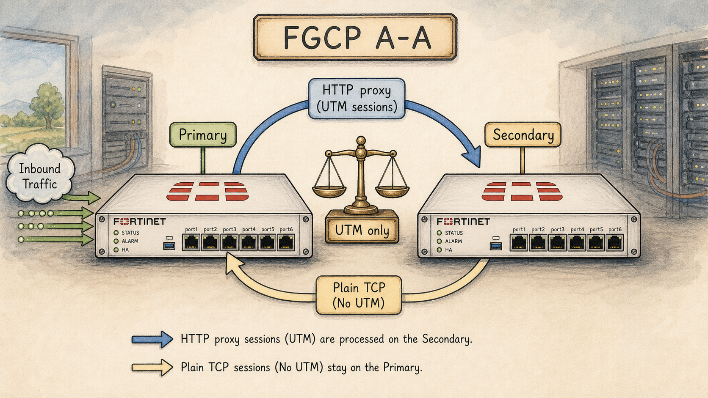

Ready to Begin the Session
| Official NSE7 EF Blueprint Objectives |
|
| Prerequisites | Session 16: FGCP Fundamentals — Active-Passive |
| Estimated Duration | 25 minutes |
| Phase | Phase 4 — High Availability: FGCP, FGSP, VRRP |
Session 17 — FGCP Active-Active & Load Balancing Where we are in the NSE7 journey: A-P leaves half the cluster idle. A-A lets the secondary process traffic too — but only certain traffic, and only in a specific way. The problem we're solving today: A-A is heavily misconstrued. The exam tests exactly what *is* and *isn't* load-balanced. Most candidates expect more than FGCP A-A actually delivers. Session goal: Predict which traffic types are load-balanced in FGCP A-A and which still pin to the primary, with a one-sentence reason for each. Key concepts: • What A-A actually balances (UTM proxy sessions only) • Per-session hashing — not per-packet • Primary still does the routing decision • When A-A makes sense — and when it doesn't • A-A drawbacks: harder troubleshooting, asymmetric path risk
Where We Are in the NSE7 Journey

FGCP A-A cluster with two FortiGates.
A-P leaves half the cluster idle. A-A lets the secondary process traffic too — but only certain traffic, and only in a specific way.
The Problem We're Solving Today
A-A is heavily misconstrued. The exam tests exactly what *is* and *isn't* load-balanced. Most candidates expect more than FGCP A-A actually delivers.
Key Concepts
- What A-A actually balances (UTM proxy sessions only)
- Per-session hashing — not per-packet
- Primary still does the routing decision
- When A-A makes sense — and when it doesn't
- A-A drawbacks: harder troubleshooting, asymmetric path risk
What We Discovered Together
Parsed from the persistent session summary produced at the end of the Socratic investigation. Use it to rebuild context before a review or a lab.
Session 17 — Fgcp Active-Active & Load Balancing
- TopicWhat is and isn't load-balanced in FGCP A-A; the real forwarding mechanism; the asymmetric-path drawback.
Story Progress
Vaultline Financial, the week after Session 16's HA fundamentals lesson. Priya noticed FGT-B (secondary) sitting at single-digit CPU all week while FGT-A carries 40-50% load, and proposed flipping the cluster from A-P to A-A to "use both boxes." Marcus deferred to the user rather than answering her directly. The session was framed entirely around building the user's own answer to Priya, which by the end was: A-A's benefit is entirely dependent on how much of Vaultline's traffic is proxy-inspected UTM vs plain flow-based, and it comes with real troubleshooting/asymmetric-path costs that have to be weighed against the CPU gain. No firm decision was made on Priya's behalf — left as an open, traffic-mix-dependent recommendation, which is realistic and can be revisited once Vaultline's actual policy/traffic breakdown becomes a story element.
Outstanding/open story threads (carried from S16, still unresolved): the second-datacenter FGCP pair deployment (different group-id), virtual clustering/VDOM partitioning, the S02 VDOM debt, Priya's monitored-interface-list audit, the Meridian cutover re-quote, and the possibility that the S02 junior engineer copied the HA config template.
Concepts Learned
2. By default, only proxy-based UTM inspection sessions (proxy AV, DLP, explicit proxy) are eligible for distribution to a secondary. Flow-based inspection and no-inspection sessions are excluded unless load-balance-all is explicitly enabled. This exists because proxy-based inspection is the only category expensive enough (buffering, termination) to justify the overhead of shipping a session to another box; flow-based/NP-offloaded traffic is already cheap.
3. The offload decision is made once, at the SYN, and never changes mid-session ("per-session hashing, not per-packet"). This is necessary because the only header information guaranteed identical across all packets in a session is the 4-tuple (source/dest IP, source/dest port) — anything that varies packet-to-packet (e.g. IP Identification field) would be unusable for a decision that must stay fixed.
4. The mechanism carrying the forwarded session traffic between primary and secondary is FGCP itself, riding the HA heartbeat interconnect but as a distinct Ethernet type — 0x8891 — separate from the 0x8890 hello frames and entirely separate from session-sync-dev (which only mirrors the session table passively for failover continuity, never carries live forwarded traffic).
5. Real Fortinet packet-flow behavior, confirmed against the Enterprise Firewall 7.6 Administrator Study Guide: for proxy-based inspection sessions, after Box A forwards the SYN to Box B via an 0x8891 frame, Box B replies to the client DIRECTLY using its own physical MAC (not the primary's vMAC), and also talks to the server directly using its own physical MAC. Box A's involvement ends after the initial forward — it never sees the rest of that session. This is the asymmetric-path behavior and is one of the two named drawbacks in this session's outline.
6. For flow-based/no-inspection sessions distributed only when load-balance-all is enabled, the behavior IS a full symmetric relay through the primary in both directions (SYN: client→A→B→server; SYN/ACK: server→B→A→client, etc.) — genuinely different from the proxy-based case. This contrast (proxy = asymmetric direct reply; flow-based-forced = symmetric relay through primary) is a strong exam distractor pair.
7. config system ha schedule (round-robin default, leastconnection, ip, ipport, weight-round-robin, random, none) controls which secondary gets a session — but only matters when there is more than one secondary. In Vaultline's 2-node cluster, schedule is functionally inert; every algorithm resolves to the same single secondary.
8. Fortinet's own stated design intent: A-A's goal is spending otherwise-idle CPU/memory on the secondary, NOT traffic-engineering load balancing. The primary always sees more total traffic than any secondary because every session still touches it first.
My Understanding
Strong- Correctly reasoned, unprompted, that A-A mechanics must differ from A-P and require deliberate design decisions before flipping.
- Independently derived that CPU-expensive (proxy/UTM) traffic is the rational candidate for offload vs cheap flow-based/NP-offloaded traffic, before being told — reused Session-cost reasoning from earlier in the conversation cleanly.
- Correctly reasoned that the offload decision must happen at the SYN (not mid-session) since inspection cost isn't known until payload arrives, and correctly reasoned the 4-tuple (not IP Identification) is the only stable hash input, after being walked through the "what stays fixed vs what changes per-packet" framing.
- Independently concluded session-sync-dev is NOT the forwarding mechanism ("you'd want to separate them") — correct, and reasoned to it rather than guessing randomly.
- Correctly derived, from first principles, that a single-box capture in A-A can show an "incomplete" handshake that is actually a completed session on the other box — reached this before being told the real asymmetric mechanism.
- Correctly reasoned that schedule is meaningless with only one possible secondary in a 2-node cluster.
- Gave a genuinely senior-grade final answer to Priya: traffic-mix-dependent, not a blanket yes/no, with operational costs named explicitly.
- Guessed the IP header's Identification field as the hash input — reasonable instinct (grabbed for "something unique per packet") but backwards: Identification varies per packet, which is disqualifying by the student's own stated test. Corrected via reasoning back to the 4-tuple.
- Initially modeled the return path as always relaying back through Box A for proxy-based sessions (reasonable default assumption, matches how a naive reverse-proxy might work) — corrected using the actual Fortinet study guide diagram: Box B replies directly to both client and server, using its own physical MAC. This was flagged as a genuine "twist" and a top exam-relevant correction, not a minor error.
- Two instances of the full custom mentor-instructions block being pasted into the chat mid-session, apparently unintentionally (once mid-Socratic-dialogue, once during troubleshooting discussion) — both times redirected back to the live question without commentary or friction.
Troubleshooting Experience
- Scenarioproxy-inspected session appears to "fail" (SYN with no SYN/ACK visible) when captured on the primary only. Correct diagnosis reached: the session likely completed successfully on the secondary, which replied directly to the client — a single-box capture is not reliable evidence of failure in an A-A cluster. Established troubleshooting principle: always know which box(es) to capture on, and check both when a proxy-inspected session looks stuck on the primary alone.
Connections
Builds directly on Session 16 (FGCP fundamentals, A-P): reuses vMAC-ownership, GARP/switch-MAC-table model, and the heartbeat-vs-session-sync-dev job contrast (ordered/exclusive vs load-balanced) established there. Session 16's "future session notes" flagged exactly this gap — "FGCP A-A traffic flow untaught — Section 20 of study guide shows the 0x8891 SYN-forwarding flow" — which this session directly closed. Sets up future sessions on virtual clustering/VDOM partitioning (mentioned in S16 as the vehicle for the second-datacenter deployment) and eventually FGSP, where session state and asymmetric traffic are handled completely differently (FGSP explicitly supports asymmetric L3 traffic by design, unlike FGCP A-A where asymmetry is an emergent side-effect specific to proxy sessions).
Important Takeaways
- A-A load-balances proxy-based UTM sessions only, by default; flow-based traffic needs load-balance-all to be forced.
- The A-A forwarding mechanism is FGCP/0x8891 over the heartbeat link — NOT session-sync-dev.
- For proxy-based sessions, the secondary replies to the client AND the server directly using its own physical MAC — Box A's job ends after the initial forward. This is the single highest-value exam/production fact from this session.
- schedule is inert in a 2-node cluster.
- A-A's purpose is idle-capacity usage, not traffic equalization — the primary always carries more total traffic.
Future Session Notes
- Reinforcement(a) re-quiz cold on 0x8890 vs 0x8891 vs session-sync-dev — three-way distinction, easy to blur under exam pressure; (b) re-ask the asymmetric-path packet-flow sequence from memory (source/dest MAC per hop) in 1-2 sessions; (c) revisit the flow-based/load-balance-all symmetric-relay case as a deliberate contrast drill, since it's easy to confuse with the proxy-based asymmetric case if not kept distinct; (d) the schedule options (round-robin/ip/ipport/leastconnection/weight-round-robin/random/none) were named but not deeply drilled — worth a short recognition-level re-test.
- Spaced repetitionin 1 session — cold-open with "capture on the primary shows a SYN and nothing else, session is proxy-inspected, user says it works fine — what's your first move?"; in 2-3 sessions — full asymmetric MAC-address table redrawn from memory; carry over from S15/S16 (still due): FGSP + VRRP + FGCP-as-FGSP-peer scenario mix.
- StoryPriya's traffic-mix answer is still open — a natural follow-up scenario is Vaultline actually enabling A-A (or load-balance-all) and hitting a real asymmetric-path incident with an upstream device, which would make an excellent troubleshooting-focused session or Extra. The second-datacenter FGCP pair / VDOM partitioning thread from S16 remains the next natural technology arc (virtual clustering).
Audio Podcast Prompt (For "The Packet Path")
Generate a two-host audio podcast script for "The Packet Path," a storytelling podcast for network engineers. Host: Alex, an experienced network security consultant. Co-host: Sam, smart and curious, asks clarifying questions. Tone: intelligent, conversational, true-crime documentary style. Episode title: "The Reply That Came From Nowhere." Setting: Vaultline Financial, shortly after considering a switch to FGCP Active-Active.
Act 1 — The Proposal: Priya notices FGT-B sitting nearly idle while FGT-A runs hot, and proposes flipping to Active-Active to "use both boxes." Alex and Sam walk through why that instinct is reasonable but incomplete — introduce the idea that not all traffic is created equal in cost.
Act 2 — The Discovery: only proxy-based UTM sessions are eligible for offload; the forwarding rides a distinct Ethernet type (0x8891) over the heartbeat link, not session-sync-dev. Sam should ask the obvious follow-up: "so the secondary just does the work and hands it back?" — setting up the twist.
Act 3 — The Twist: reveal that for proxy-based sessions, the secondary replies to the client directly, using its own physical MAC — the primary never sees the rest of the conversation. Frame this as "the reply that came from nowhere" from the perspective of an engineer capturing traffic only on the primary and finding an incomplete handshake for a session the user insists is working fine. Resolve with the real troubleshooting lesson: check both boxes before declaring anything broken.
Act 4 — The Verdict: Alex and Sam land on the senior-engineer answer for Priya — it depends on Vaultline's traffic mix, and the operational cost (troubleshooting complexity, asymmetric-path risk) has to be weighed against the CPU gain, because A-A's real purpose is using idle capacity, not balancing load.
Guides, Bites & Nibbles
Additional resources sorted to this session — deeper guides, focused explainers, and quick-reference cards.